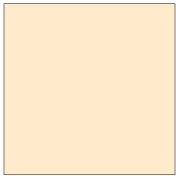
s = 1
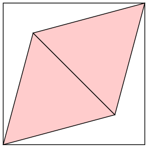
s = 3√6/4 = 1.837+
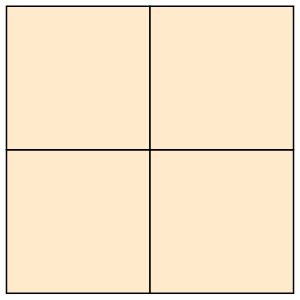
s = 2
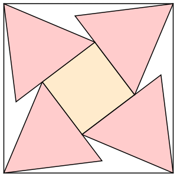
s = 2.568+
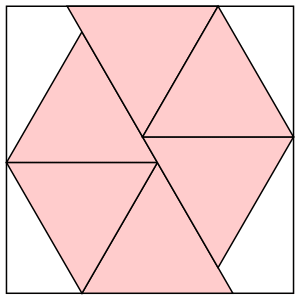
s = 9(3–√3)/4 = 2.852+

s = 3

s = 3.469+ (MM)
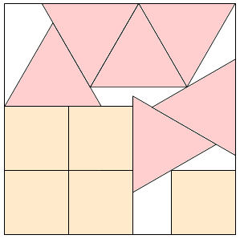
s = (43–2√3)/11 = 3.594+ (MM)

s = 3.793+ (MM)
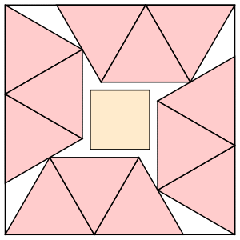
s = (6+√3)/2 = 3.866+
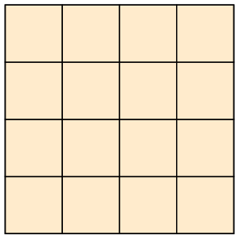
s = 4
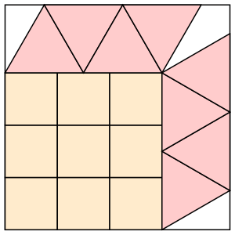
s = 3+3√3/4 = 4.299+
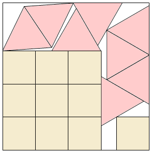
s = 4.465+ (MM)
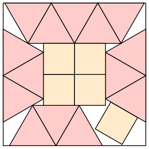
s = 2+3√3/2 = 4.598+
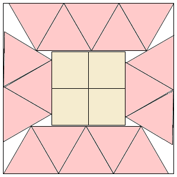
s = 4.644+ (MM)
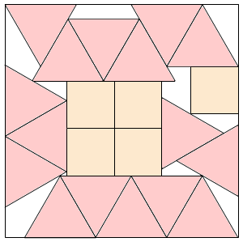
s = 4.901+ (MM)
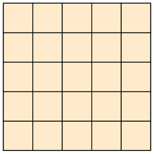
s = 5
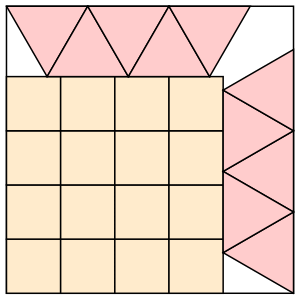
s = 4+3√3/4 = 5.299+
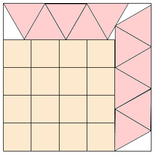
s = 5.311+ (MM)
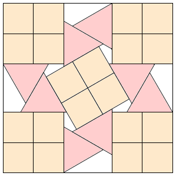
s = 5+1/√3 = 5.577+ (MM)
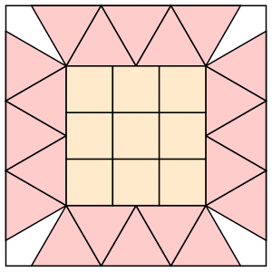
s = 3+3√3/2 = 5.598+
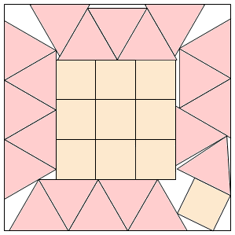
s = 5.692+ (MM)
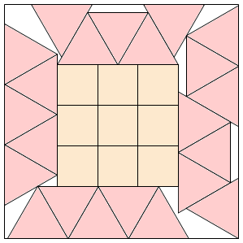
s = (57+141√3)/52 = 5.792+ (MM)
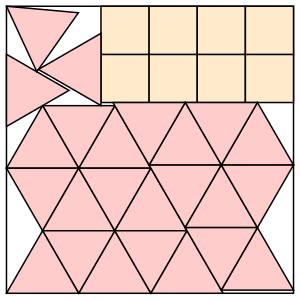
s = (91–25√3)/8 = 5.962+
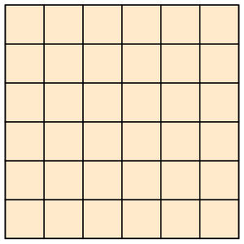
s = 6
s = ?
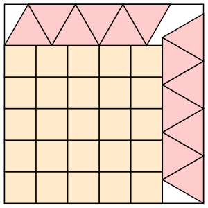
s = 5+3√3/4 = 6.299+
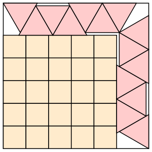
s = (17+5√3)/4 = 6.415+
s = ?
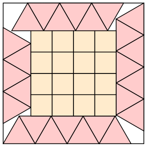
s = 4+3√3/2 = 6.598+
s = ?
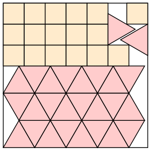
s = 3+9√3/4 = 6.897+
s = ?
s = ?
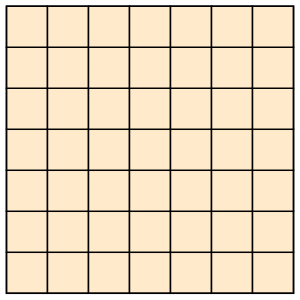
s = 7